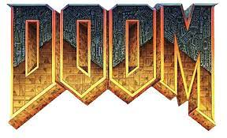
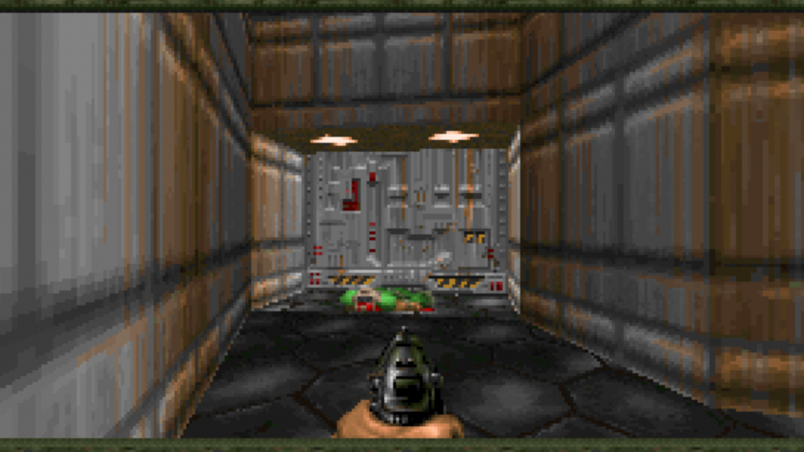

Історія гри
Відеогра, випущена компанією id Software 10 грудня
1993 року, один з найбільш відомих та
популярних шутерів від першої особи.
Вона багато в чому здійснила визначальний ідейний вплив на подальший
розвиток жанру шутерів.
Гравцеві пропонується взяти на себе роль піхотинця, що опинився на базі Фобосу, де внаслідок
невдалого
експерименту в наш світ прорвалися демони з Пекла.
Піхотинець мусить боротися з демонами, щоб вижити,
вирішувати просторові і зрідка логічні завдання, шукати сховки зі зброєю, боєприпасами та амуніцією.
Ігрові
рівні є заплутаними лабіринтами з коридорів і кімнат, де знаходяться численні двері, ліфти, шахти, секретні
приміщення і різнокольорові ключі й кнопки для їх відкриття.
Саме оточення часом є небезпечним: підлога
залита
лавою, кислотами різної сили, водою, де можна втонути, отруйними відходами. Ігровий процес багато в чому
ґрунтується на складності та інтерактивності оточення.
На деяких рівнях є телепорти, які миттєво переносять
гравця в інше місце.
Хронологія
- Doom 1993
- Doom 2
- Final Doom
- Doom
- 3
- 2016
- Eternal
Команда
Джон Кармак,Джон Ромеро,Кевін Клауд, Панчац
Вплив на індустрію
Doom вийшла в той час, коли в США саме відбувалася хвиля занепокоєння жорстокістю у відеоіграх. В 1993 році, 10
грудня, сенатор Джо Ліберман почав слухання федерального масштабу. На них Юджин Провенза заявив,
що відеоігри
надмірно жорстокі, викликають сексистські і расистські настрої».
Роберт Чейз, президент Національної
асоціації
освіти, припустив, що ігри провокують жорстокість в реальному житті. «Через те, що вони більше активні, ніж
пасивні, [відеоігри] можуть зробити вразливих дітей нечутливими до жорстокості, — сказав він. — Вони, по суті,
пропагують її як єдино можливе рішення, заохочуючи учасників до вбивства своїх ворогів найбільш збоченим з усіх
мислимих і немислимих способів».
Наступного дня id Software випустила Doom. Її кривавість стала підставою
того,
що Doom (для Sega 32X) стала першою відеогрою, якій організація ESRB надала рейтингу M — тільки для
дорослих. Деякі критики називали її «симулятором убивств». Разом з такими іграми як Mortal Kombat і Night
Trap, що розглядалися на слуханнях, Doom увійшла в історію як одна з найспірніших з точки зору етики. Ці
інтерактивні твори спричинили масовий інтерес до питання як відеоігри впливають на масову культуру